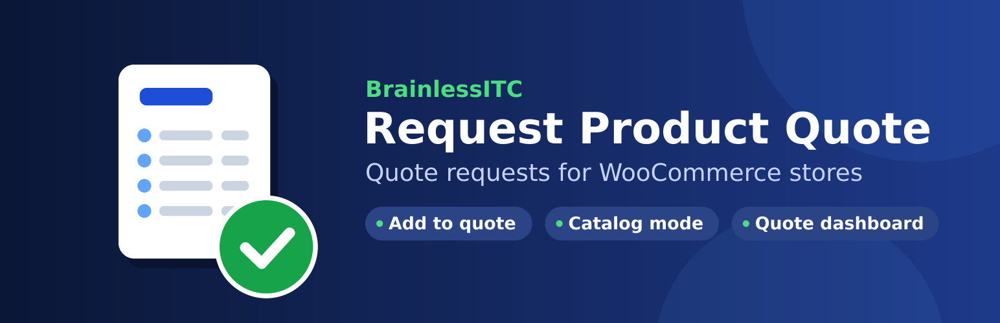
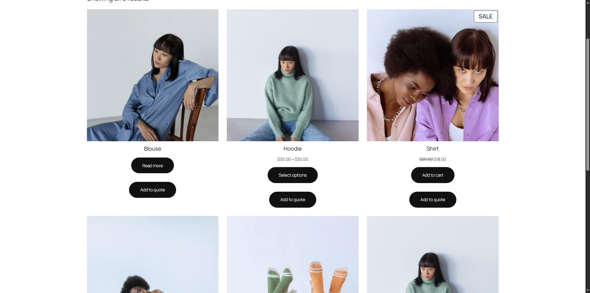

BrainlessITC Request Product Quote for WooCommerce
Let customers collect products in a quote list and send you a quote request — instead of, or next to, buying right away.

What it does
The plugin adds an Add to quote button to your WooCommerce products. Customers add products to a quote list, fill in a short form and send you a request. You see every request in Quotes in your dashboard and reply to the customer by email in one click.
It is a good fit for B2B and wholesale stores, made-to-order products, bulk orders, products without a fixed price, or any store that wants to agree on a price before selling.
Quote buttons everywhereOn product pages and in shop, category and block-based product lists — classic and block themes.
Catalog modeHide prices (with optional text) and hide Add to cart, for all products or per product.
Quote list & request formA "View Quote" page with quantities, a short form and a confirmation message.
Quotes dashboardStatus filters, search, bulk actions, private notes and one-click replies by email.
WooCommerce emailsAdmin and customer emails you can edit and preview in WooCommerce > Settings > Emails.
Built to fit inBlocks and shortcodes, HPOS and Cart/Checkout blocks compatible, GDPR export and erasure, translation ready.
How it works
- Customer adds products. Clicking Add to quote on a product or in the shop adds it to their quote list — without reloading the page.
- Customer sends the request. On the View Quote page they review quantities, fill in their details and send the request.
- You get notified. You receive a "New quote request" email and the request appears in Quotes. The customer gets a confirmation email.
- You reply. Open the quote, add notes, change its status and send a reply. With Pro you can send a priced proposal the customer accepts and pays online.

Free vs Pro
The free plugin is complete on its own. The Pro add-on installs next to it and builds on the same quotes and settings — nothing is migrated or lost when you upgrade.
| Feature | Free | Pro |
|---|---|---|
| Add to quote on product pages and shop / category lists | ✓ | ✓ |
| Simple and variable products (including "any" attributes) | ✓ | ✓ |
| Catalog mode: hide price / Add to cart, globally or per product | ✓ | ✓ |
| Quote list page and request form | ✓ | ✓ |
| Enable, require and relabel the built-in form fields | ✓ | ✓ |
| Spam protection: honeypot, submit-time check, per-IP rate limit | ✓ | ✓ |
| Quotes dashboard, statuses, notes, reply by email | ✓ | ✓ |
| Blocks, shortcodes, template overrides, GDPR tools | ✓ | ✓ |
| Priced proposals: your prices, discount, shipping, fee, message, expiry | — | ✓ |
| Customers accept or decline online; accepted quote becomes an order with a payment link | — | ✓ |
| PDF quotes (download and email attachment) | — | ✓ |
| Rules by user role, guest / logged-in, product, category, tag, stock status | — | ✓ |
| Form builder: dropdowns, radios, checkboxes, dates, numbers, file uploads | — | ✓ |
| "Quotes" in My Account, proposal expiry and reminders | — | ✓ |
| Create quotes in the admin, cart-to-quote, customer target price | — | ✓ |
| CAPTCHA (Cloudflare Turnstile / reCAPTCHA v3), webhooks, reports | — | ✓ |
Requirements
- WordPress 6.4 or newer (tested up to 7.1)
- WooCommerce 8.0 or newer
- PHP 7.4 or newer
Screenshots